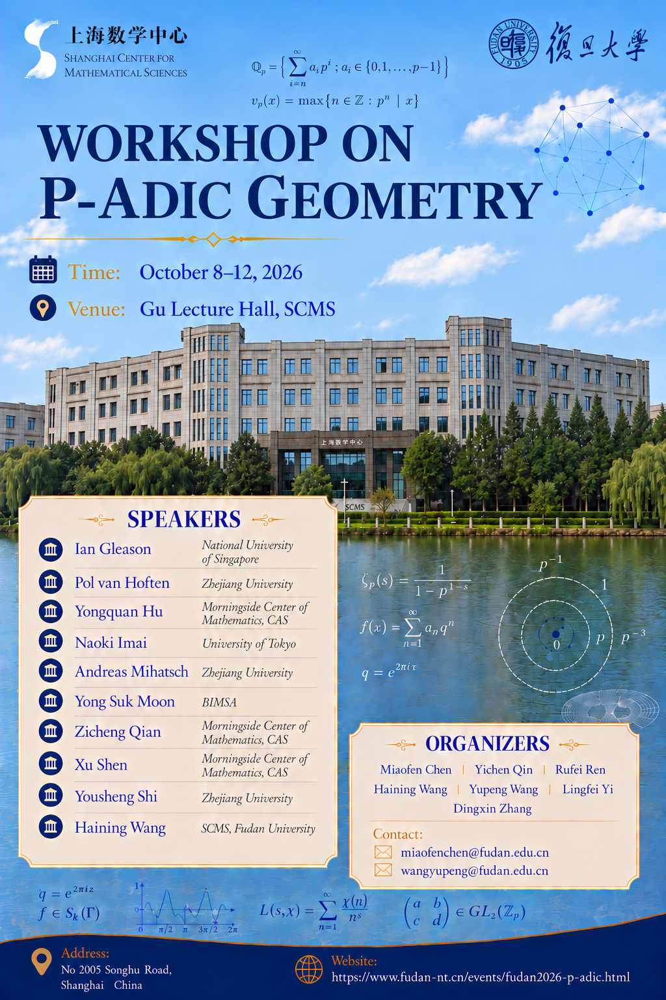

复旦2026 p-adic 几何研讨会
2026 Fudan Workshop on p-adic Geometry
Talks: October 9–11, 2026 · Jiangwan Campus
Contact:Miaofen Chen miaofenchen@fudan.edu.cn Yupeng Wang wangyupeng@fudan.edu.cn

邀请报告人 Speakers
组织委员会 Organizing Committee
Miaofen Chen, Yichen Qin, Rufei Ren, Haining Wang, Yupeng Wang, Lingfei Yi, Dingxin Zhang
日程安排 Schedule
October 9–11, 2026 · Gu Lecture Hall, SCMS, Jiangwan Campus · UTC+8
| 时间 Time | 10月9日 · 周五 Oct. 9 · Friday | 10月10日 · 周六 Oct. 10 · Saturday | 10月11日 · 周日 Oct. 11 · Sunday |
|---|---|---|---|
| 09:00–09:30 | Registration / 签到 | — | — |
| 09:30–10:30 | Xu Shen | Naoki Imai | Yongquan Hu |
| 10:30–11:00 | Tea Break / 茶歇 | Tea Break / 茶歇 | Tea Break / 茶歇 |
| 11:00–12:00 | Ian Gleason | Yong Suk Moon | Zicheng Qian |
| 12:00–14:00 | Lunch / 午餐 | Lunch / 午餐 | Lunch / 午餐 |
| 14:00–15:00 | Andreas Mihatsch | Pol van Hoften | Free discussion 自由讨论 |
| 15:00–15:30 | Tea Break & Photos 茶歇与合影 | Tea Break / 茶歇 | |
| 15:30–16:30 | Yousheng Shi | Haining Wang | |
| 晚间 Evening | — | Banquet / 晚宴 · 18:00 |
报告题目摘要 Titles & Abstracts
摘要：The local model diagram relates the integral model of a Shimura variety, via smooth morphisms, to the so-called local model, whose geometry is much easier to understand. In this talk we discuss a weak, purely cohomological version of this diagram, which can be established by v-sheaf-theoretic methods alone, in contrast to the classical approach through the deformation theory of $p$-divisible groups. This weak version admits natural generalisations to level structures deeper than parahoric, and it is already strong enough to recover many of the cohomological consequences usually extracted from the full diagram. As an example, we obtain a "coherent-side" formula for the cohomology of Shimura varieties at pro--Iwahori level. All results are joint with Xiangqian Yang and Xinwen Zhu.
摘要：Igusa stacks are p-adic analytic objects associated to Shimura varieties of abelian type which link the Shimura variety to Fargues-Scholze's $\mathrm{Bun}_G$, the moduli stack of $G$-bundles on the Fargues-Fontaine curve. I will state a conjecture about exotic isomorphisms between Igusa stacks for different Shimura varieties, which is closely related to the exotic Hecke correspondences of Helm, Tian-Xiao and Xiao-Zhu. I will give a proof of this conjecture under some assumptions, and explain cohomological consequences. This is joint work with Jack Sempliner.
摘要：Let $D$ be the quaternion division algebra over $\mathbb{Q}_p$. In this talk, I will discuss the finite-length problem for spaces of locally analytic vectors in admissible unitary Banach representations of $D^{\times}$ admitting an infinitesimal character.
摘要：Fargues-Scholze constructed the semisimplified version of the local Langlands correspondence for $p$-adic reductive groups using the idea of geometrization. In this talk, we discuss its generalization to covering groups of $p$-adic reductive groups. This is based on joint work in progress with Tony Feng, Teruhisa Koshikawa and Yifei Zhao.
摘要：We introduce a notion of $\pi$-divisible $\mathcal{O}$-module which interpolates between strict $\mathcal{O}_F$-modules for increasingly ramified extensions $F/\mathbb{Q}_p$ and minuscule local shtukas for $\mathbb{F}_p[\![t]\!]$. Starting with a framing object, we prove that the attached RZ space functor is representable by a formal scheme over $\mathrm{Spf}(\mathcal{O}_F)$. We show that intersection numbers defined by special cycles vary locally constantly in such families, and we use this to deduce the unitary arithmetic fundamental lemma in equal characteristic from the mixed characteristic case. These results are joint work with Sebastian Bartling.
摘要：Let $X$ be an affinoid rigid analytic space over a $p$-adic field, equipped with a suitable etale map to a unit polydisk. We will discuss a formalism of imperfect relative period rings over $X$, which lie inside the corresponding perfect relative period rings constructed by Kedlaya-Liu. Then we will explain a relative version of the Fontaine-Cherbonnier-Colmez equivalence between $p$-adic local systems on $X$ and etale $(\varphi,\Gamma)$-modules over such imperfect relative period rings. From this equivalence, we will present a construction of $p$-adic differential equations attached to de Rham local systems, carrying both geometric and arithmetic differential operators. This is a joint work with Hansheng Diao and Zijian Yao.
摘要：We survey the generalization of Breuil's $L$-invariants to $\mathrm{GL}_n$, including Breuil-Schraen $L$-invariants generalizing Schraen's work and Breuil-Ding $L$-invariants generalizing Breuil-Ding's joint work in $\mathrm{GL}(3,\mathbb{Q}_p)$ case. Firstly, BS $L$-invariants are defined based on careful computation of locally analytic cohomology of locally analytic generalized Steinberg, which is further based on a "restriction from $G$ to $\mathfrak{g}, N(T)$" method and combinatorial computations in the Lie algebra setting. Secondly, BD $L$-invariants are defined based on explicit finite length admissible locally analytic representations constructed in a previous joint work with Breuil. Thirdly, BS $L$-invariants and BD $L$-invariants are related to Fontaine-Mazur $L$-invariants simultaneously through the pro-etale complex of the Drinfeld space, generalizing Vanhaecke's thesis in the $\mathrm{GL}(2,\mathbb{Q}_p)$ case. Finally, a version of local-global compatibility holds by combining the above intertwining on the Drinfeld space, Scholze's functor and its compatibility with generalized Hecke eigenspaces (following Kegang Liu's thesis) and an adjunction type result in Breuil's $\mathrm{Ext}^1$ paper. This talk is based on several joint works with Arnaud Vanhaecke and Benchao Su along with several of my own works (partially by rewriting and splitting my previous work with corrections).
摘要：We will first briefly discuss the theory of rigid analytic $1$-motives over a $p$-adic field. In particular, we will discuss the Neron-Ogg-Shafarevich criteria. Next, we will talk about conjugate uniformization of abeloid varieties. This is a type of $p$-adic uniformization initiated by Iovita–Morrow–Zaharescu in case of abelian varieties with good reduction. Our approach is based on Fargues' theory of $p$-divisible rigid analytic groups. Along the way, we construct $p$-divisible rigid analytic groups from general rigid analytic $1$-motives. This is joint work with Khai-Hoan Nguyen-Dang and Heer Zhao.
摘要：In this talk, I will present an explicit functional equation of Eisenstein series with vertex level. Along the way, we establish explicit formulas for the intertwining operator acting on the corresponding Siegel-Weil sections. In contrast with the previous methods, all the computation uses only the theory of local quadratic/Hermitian forms, hence answering a question of Kitaoka. This talk is based on a joint work with Qiao He, Chao Li, Tonghai Yang and Baiqing Zhu.
摘要：In this talk, I will review the history of $p$-adic uniformization of Shimura curves and present a recent result concerning the $p$-adic uniformization of Shimura curves of unitary type. This is joint work with Michael Rapoport.
住宿与交通 Accommodation & Travel
Hotel: Fraser Place Wujiaochang Shanghai / 上海五角场辉盛坊公寓酒店
1258 Yinhang Road, Yangpu District, Shanghai / 上海市杨浦区殷行路1258号
From Pudong Airport (PVG): Take Metro Line 2 and Line 10 to Xinjiangwancheng (新江湾城) Station, then walk for about 5 minutes. The booklet estimates a taxi journey of about 50 minutes, costing around RMB 180.
From Hongqiao Airport (SHA) / Hongqiao Railway Station: Take Metro Line 10 to Xinjiangwancheng (新江湾城) Station, then walk for about 5 minutes. The booklet estimates a taxi journey of about 50 minutes, costing around RMB 100.
用餐信息 Dining Information
Campus dining: Each participant will receive 15 meal vouchers worth RMB 10 each, valid at the north dining hall on October 9–11. They can be used at all service windows except the Halal counter on the 1st floor, the central island section on the 2nd floor, and the pay-by-weight section and roast duck counter on the 3rd floor.
UFUN Mall / 悠方: Near Gate 3 of Jiangwan Campus, about a 15-minute walk from SCMS or a 5-minute walk from the hotel.
Wujiaochang / 五角场: Restaurants in the area's shopping malls are about 15 minutes from campus via Metro Line 10.